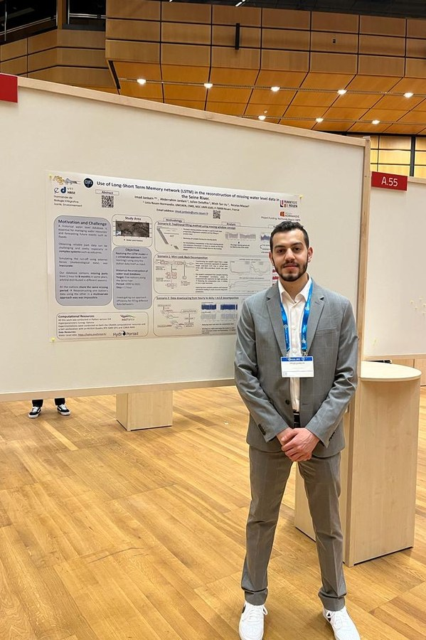

5+ yrs
applied deep-learning research across environmental and climate systems
Postdoctoral Research Scientist at CNRS · M2C, working at the intersection of applied deep learning, computer vision, and Earth-observation data. Five years of research on climate, hydrology, and geospatial problems — from flood forecasting to Sentinel-1 satellite segmentation to custom loss design for extreme events.
5+ yrs
applied deep-learning research across environmental and climate systems
5 papers
2 published (HSJ · Water/MDPI) · 3 under review in Journal of Hydrology
−96% / +83%
training time / forecast accuracy gain from my Mini-LookBack method
🇫🇷 🇺🇸 🇦🇹 🇮🇸
four countries where I’ve presented or trained — AGU, EGU, RST, HDCRS
I’m a research scientist working at the intersection of applied deep learning and real-world data. My toolkit spans time series, computer vision, and geospatial modelling — and I’ve spent the last five years putting all three to work on environmental problems.
I came to machine learning by way of engineering. I trained as a mechatronics engineer in Beirut, then moved to France for a master’s in automation and computer science at Grenoble INP, where I built a Gaussian-Process forecasting model inside a model-predictive-control loop for the Smart-Occitania rural micro-grid project — predicting electricity and water demand for real deployment.
My PhD at CNRS M2C shifted me toward environmental systems. Over four years I built deep-learning pipelines for the Seine River basin — reconstructing decades of missing water-level records, forecasting flash floods in small catchments, designing a custom Quantile–Tail–Huber loss for extreme events, and building a semi-supervised segmentation system for Sentinel-1 SAR imagery. The work is featured on the Université de Rouen’s Plateforme multirisques.
Today, as a postdoc, I’m evaluating Kolmogorov–Arnold Networks for long-term groundwater forecasting under CMIP6 climate scenarios — the first systematic KAN vs. LSTM comparison on hydroclimatic data. On the side, I work on vision pipelines and LLM-augmented document understanding.

Six projects spanning time-series forecasting, computer vision, geospatial ML, and LLM-augmented document processing.
A production-grade Python package implementing the Mini-LookBack decomposition I introduced in Hydrological Sciences Journal, 2023. Reshapes a long single-feature input window into a multi-feature one, cutting GRU training time by 96% and reducing rollout error for gap-filling decades of missing Seine River water-level records. Ships with a toy-data generator, Optuna tuning with SQLite persistence, an auto-running data-quality gate, Docker, CI/CD, and an electricity-demand worked example.
A generalized deep-learning framework for multivariate time-series imputation, based on my 2023 Seine water-quality publication (Water · MDPI). Five architectures (LSTM, BiLSTM, GRU, BiGRU, CNN-BiLSTM with optional attention) and a two-phase methodology — a grid of model experiments, then progressive reconstruction with feasibility-gated model selection. Depth-aware spatial EDA handles surface-vs-bottom probes.
Semi-supervised semantic segmentation of flood extent on Sentinel-1 SAR imagery. Built the pipeline end-to-end: radar-amplitude preprocessing, a U-Net-style architecture, pseudo-labeling to handle the scarcity of annotated flood masks, and IoU / F1 evaluation. Self-initiated to deepen computer-vision and Earth-observation fluency beyond the PhD thesis work.
Layered a large language model on top of a classical OCR pipeline to turn raw character streams into structured, queryable representations. Demonstrates an end-to-end vision→NLP flow: image detection & OCR extract the raw text, then an LLM normalizes, classifies, and reasons over the output. Built to stay fluent with modern multimodal ML patterns.
End-to-end pipeline for extracting structured fields from credit-card images. An R-CNN localizes the card in the frame, OpenCV handles perspective correction and text-region detection, and Tesseract reads the fields. One of the first computer-vision projects I shipped outside a lab environment.
Research internship at PROMES-CNRS on the Smart-Occitania project: forecasting electricity and water demand in rural micro-grids with Gaussian Process Regression, with predictions feeding a Model-Predictive-Control dispatch loop. My first industrial-oriented ML project and the bridge from my mechatronics background into applied machine learning.
Peer-reviewed papers, the PhD thesis, institutional showcases, and conference work.
EGU General Assembly · Vienna, Austria
AGU Fall Meeting · San Francisco, USA
RST — Réunion des Sciences de la Terre · Montpellier, France
HDCRS Summer School · Reykjavík, Iceland
Tools, frameworks, and practices I actually ship with.
Open to research collaborations, industry roles, and good questions — particularly where deep learning meets environmental, geospatial, or time-series data.
imad.janbain@hotmail.com